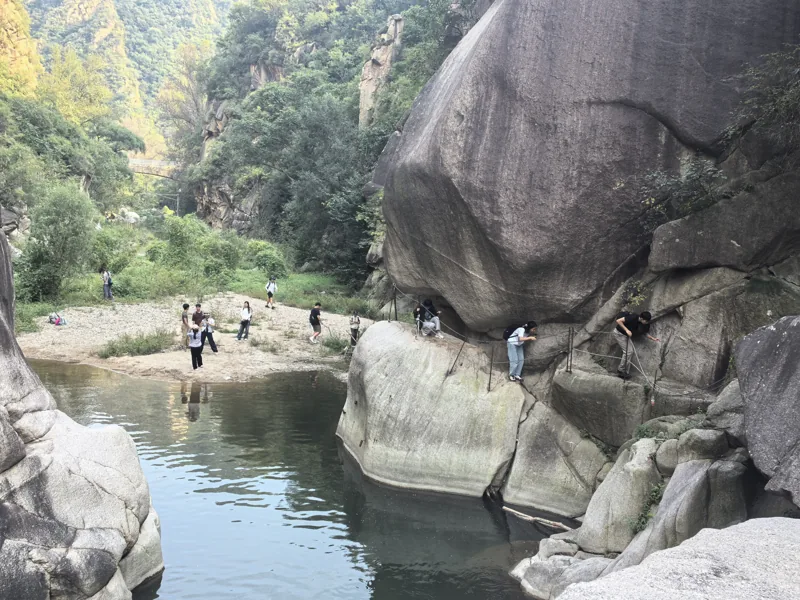

虎家 · 老虎朋友们的快乐老家
老虎朋友们的快乐老家
好吃的、好玩的、一起走过的山野，还有想对老虎说的话。咱们慢慢收集，一起把虎家填满。

有空一起玩，随时回来坐坐。吃喝玩乐 ↗
美食 · 美景 · 北京室内游玩
朋友来北京，周末想出门，都来找找灵感。
户外资料库 ↗
路线 · 装备 · 知识 · 运动体验
从第一次出发，到下一次探索，慢慢积累经验。
想对老虎说 ↗
活动愿望 · 建议与批评 · 评价
你的想法、我的回应，还有事情后来的进展。
虎家朋友们 ↗
领队朋友 · 活动相遇 · 共建伙伴
记住一起玩的人，也记住大家的帮助。